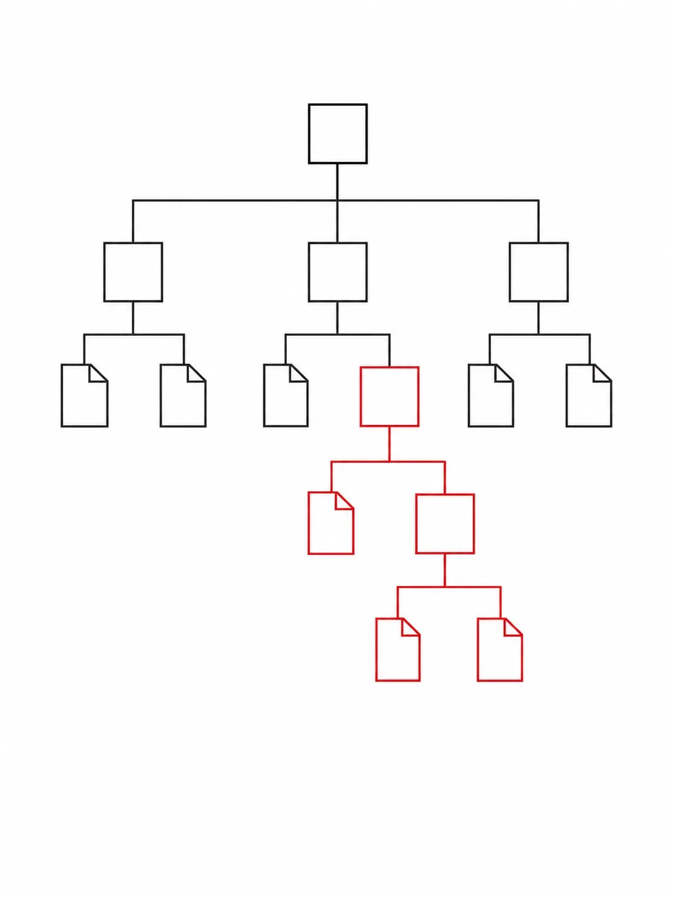

A technical field guide
Plan 9

An International-style graphic: flat geometric shapes on a white field, black and grays with one Swiss-red accent, strict alignment and generous whitespace. Reductive and rational — a diagrammatic image, no shadows, no gradients, no ornament. Subject: a small cluster of thin-stroke boxes representing files and directories, connected by straight orthogonal lines into a single tree, with one box picked out in Swiss red to suggest a mount point grafted into the hierarchy. No text labels baked in. Target size ~960×1280px, 3:4 portrait; compose for a book cover — the subject sits centred in the upper two-thirds with safe margins, leaving quiet space near the bottom for a title to be overlaid.
Generate this with your image agent, then drop the file here.
A focused, technical tour of Plan 9 from Bell Labs: per-process namespaces, the 9P protocol, file servers, mount/bind/union directories, plumbing, and the security model — grounded in the original overview paper and primary sources.
Resume reading →Contents
-
01
The Plan 9 Model
Part 1 — Introduction -
02
Namespaces
Part 2 — Mechanism -
03
The 9P Protocol
Part 2 — Mechanism -
04
File Servers
Part 2 — Mechanism -
05
Mount, Bind, and Union Directories
Part 2 — Mechanism -
06
Process Namespaces
Part 2 — Mechanism -
07
Plumbing
Part 2 — Mechanism -
08
Security and the Capability Model
Part 2 — Mechanism -
§
Cheatsheet
Quick reference